August 6 - 13, 2011
| This year we were accompanied by
the Clouse family on our yearly trip to Montana. Seeing everything
through their eyes added extra fun to the trip, especially watching the
kids enjoy the ranch. It was wonderful to see everyone and to be up
there in all the beauty. It was also a very welcome break from the
brutal summer heat. It was beautiful up there! |
|
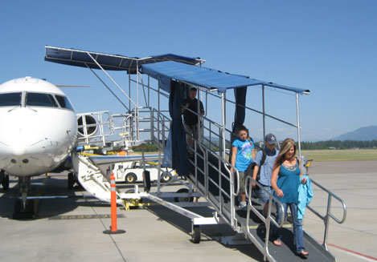 |
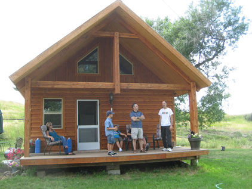 |
| The Clouses arrive in Kalispell | Now we've made it to Eureka. They stayed in the little house and really liked it. |
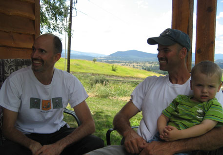 |
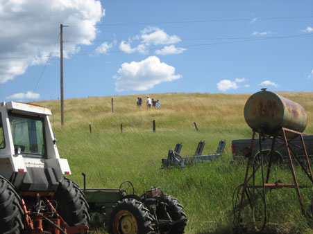 |
| Eric, Dan, and Lane being entertained on the front porch. | Time for a trek up to Lake Costich |
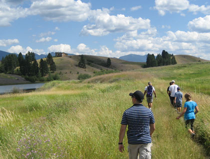 |
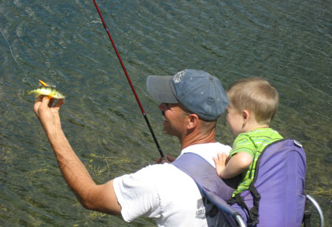 |
| First glimpse of the lake, beautiful as always. | Dan caught a fish the same size as his bait! |
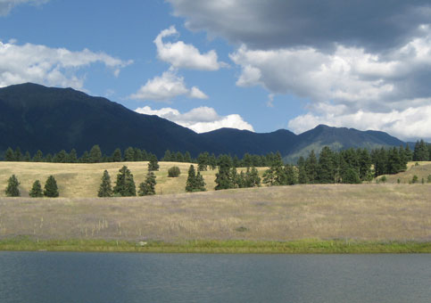 |
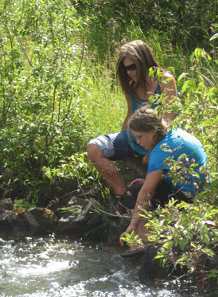 |
| This place brings out the landscape photographer in me | Time to get our feet wet at the whirlpool |
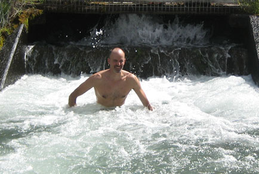 Eric went in and found the water a bit chilly. |
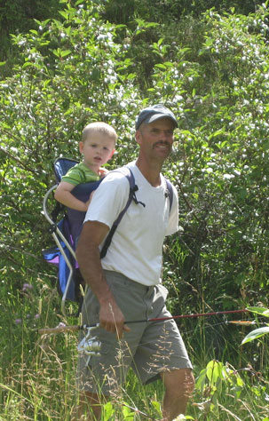 |
| Dan & Lane, scoping out the best fishing spot | |
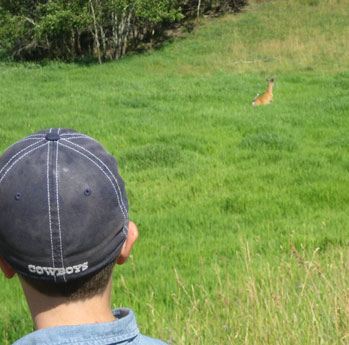 |
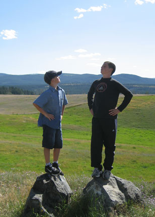 |
| Here we spook a deer as we walk across our land. | Josh & Matthew - valiant explorers of Montana! |
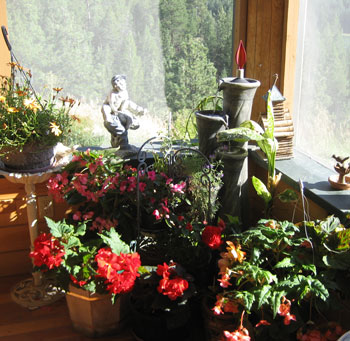 |
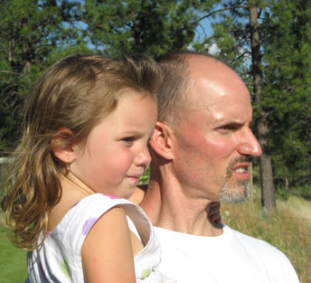 |
| Out at the Ponderosa we enjoyed Rose's beautiful flowers | Catching a striking difference in the profiles. She got Amy's nose! |
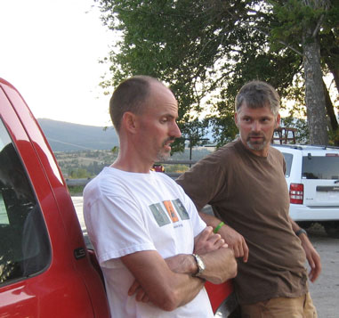 |
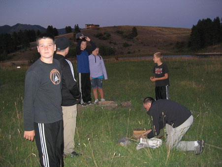 |
| Mark is not believing a word of this tale. I'm not sure I blame him! | The kids made fast friends with Cody, here we are building a camp fire. |
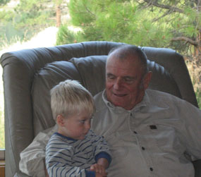 |
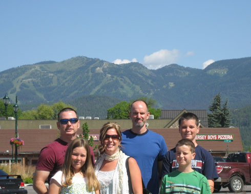 |
| Cooper has Grandpa wrapped around his little finger. | Eric and the Clouses in Whitefish after attending a wonderful
service at Calvary Chapel Whitefish and having a great lunch in town. |
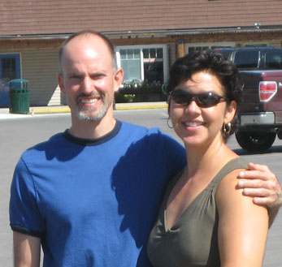 Casazzas in Whitefish |
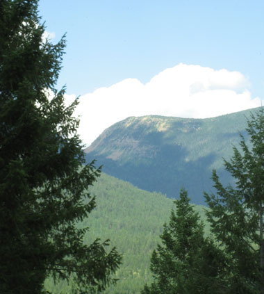 |
| Therriault pass - I am so proud I spelled this correctly from memory! | |
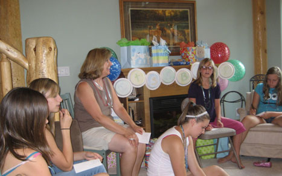 |
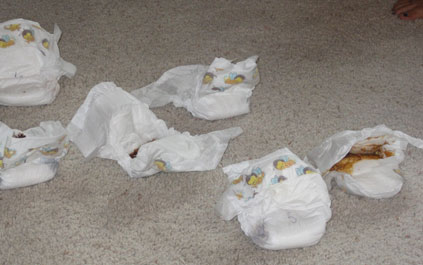 |
| Here we have a baby shower for Jodi organized by the girls, they
came up with some amazing games! |
For instance this one, where we had to sniff these
"dirty" diapers and guess which kind of candy bar made the squishy mess. |
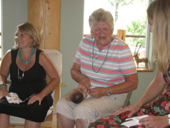 Rose seemed to enjoy this game - diapering a baby doll with our eyes closed. I'm sure she has done 10,000 diapers with bleary eyes before, but that was a long time ago! |
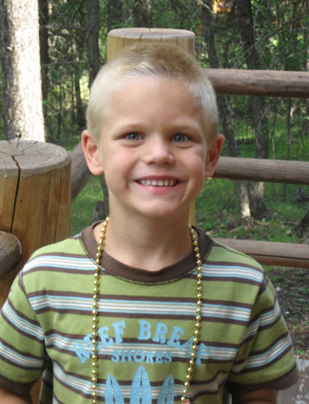 |
| Bubba is pretty happy that his mom made caramel corn | |
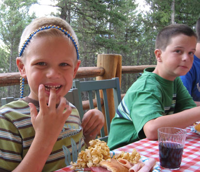 |
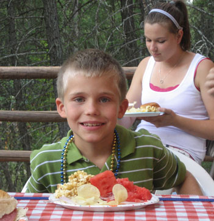 |
| He made sure to get some with his meal because it goes fast | Erik knows the trick too. |
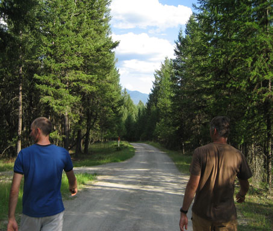 |
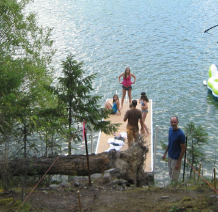 |
| Wow, notice any similarities? |
Here we survey "the dock" - source of much angst due
to a dispute with the neighbor over the easement. The kids enjoyed it anyway. |
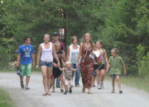 Here Larry asked the family to only use |
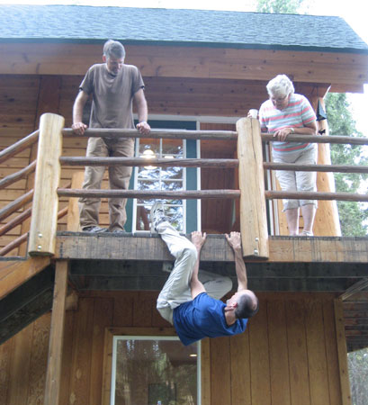 |
| Because stairs are for sissys. | |
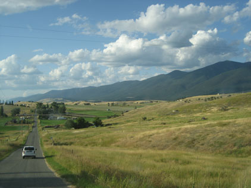 |
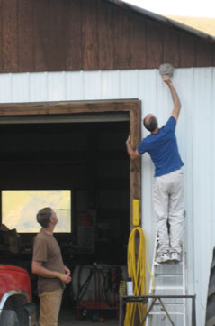 |
| It's hard to keep one's hand from reaching for the camera around here. | Now we see Eric pulling down a wasp nest from the barn. |
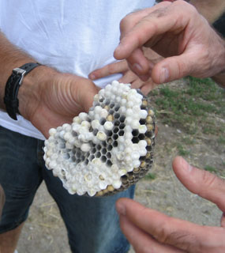 |
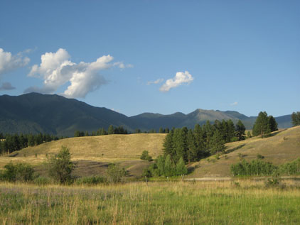 |
| Of course they can't just throw it away without messing with the larvae first. It's too gross an opportunity for Casazza males to let pass by. |
It looks different at different times of the day, OK? I
have to keep taking more pictures. |
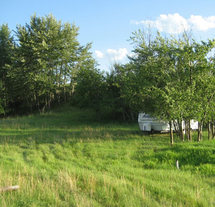 |
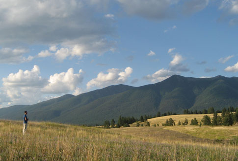 |
| Here was our little spot that Jeb & Amy made for us by putting their camper on our land for us - that was so sweet! |
Eric, watching the sun set and thinking about how he can buy
more of all he sees |
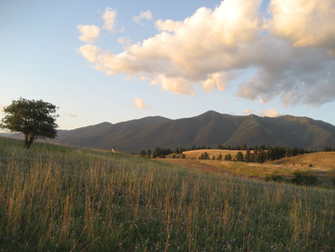 |
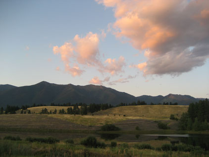 |
| See Eric on the hill there in his chair? He misses his Montana. | It is rather pretty. (In the summer at least!) |
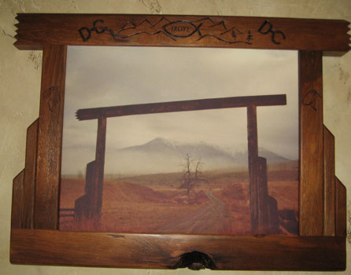 |
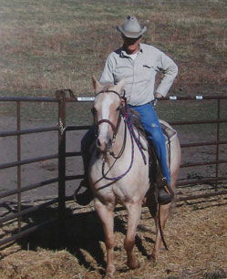 |
| A picture of the ranch entrance framed in a frame to match - very clever. | This was a picture of Dan hanging on Rose's wall. Yes, I poached the picture, but it's so good! |
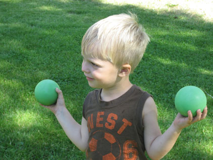 |
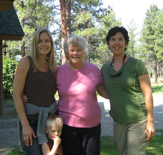 |
| Cooper wasn't too good a croquet but he was great at looking cute. | Here we let the little boys take our picture, they actually got all of us in a couple of shots! |
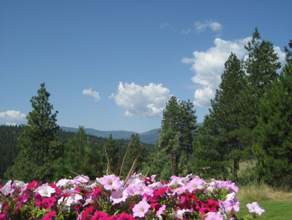 |
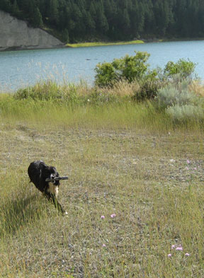 |
| Rose's flowers are always so lovely |
And Tipper is always so anxious to fetch. And fetch, and fetch... |
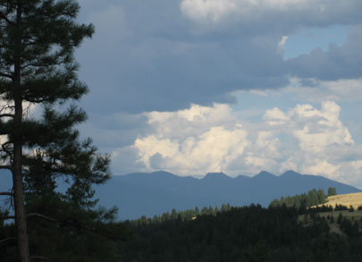 |
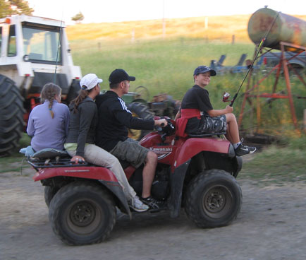 |
| New scenery - this time from the Ponderosa | The Clouse family, loaded up and ready to fish |
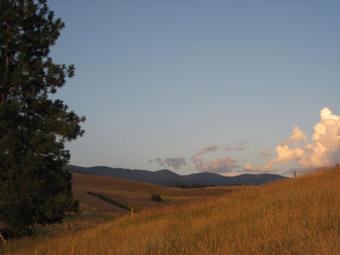 |
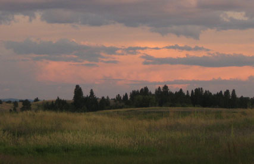 |
|
Sunset at Costich Lake |
|
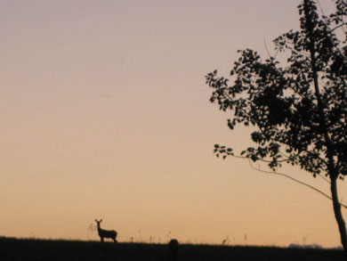 |
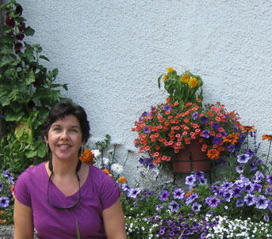 |
| Deer on the horizon |
Here I am with some flowers during a day trip with Rose to Glacier National Park. We had a wonderful day together. |
| Rose treated me to a guided tour of the park in one of the red busses | It was a great way to see the park. |
| It had been almost 10 years since I'd visited the park, it was as beautiful as I'd remembered. |
The driver was nice enough to take this for us while we were
stopped for some road construction. |
This bridge on the left with 3 arches was an architectural & engineering miracle. The road really is terrifyingly narrow and precarious-feeling. |
|
| A melting snow bank near the top of the pass | |
| This shows the lack of space between us and one of
the smallest cars in oncoming traffic. These busses are wider than what is allowed in the park, but they get an exception. |
At the top of the pass |
Me, thinking about something off in space somewhere |
|
| Me & Rose and a lovely river | |
| Meanwhile, back at the ranch... We spent a fun
afternoon on the 4-wheelers with Larry, Mary Beth, Rebecca, and Katie. |
The barn and the hay truck, looking very
picturesque. |
| Larry, trying to keep up with his girls (a full time job!) | The guys on the excavator that several of us went in on. |
| I don't think Katie is buying his story, I'm noticing a pattern in this. | The cattle are not impressed by our non-feed-bearing 4-wheelers. |
| Aubrey, looking even cuter than usual in Grandpa's shoes | Coulter & Madison with Amber's dogs |
| The lake just won't stop posing for pictures - what can I do? | There were a lot of crawdads caught during this week. (Or maybe it was the same unfortunate few over and over again?!) |
| He's still got it - always the fisherman | Beautiful Amy in the sunset |
| Sunset in action | Eric has always loved this old farm place |
| Here Matthew rides in the "boot" so that I could bum a ride to the Ponderosa | Eric had been on an early morning salmon trip that went quite well |
| Rose & I with the lake & flowers in the yard | Dan & Eric using the smoker on the salmon |
| Smoked salmon - they were so good! | This made Eric feel right at home |
| Here we walk "the Lundeen land" - our latest
land purchase |
Eric is pretty pleased with himself. You can almost hear
him thinking, "I got my land and my woman, I'm all set." |
| Airing out the forehead |
Rose doesn't like to have her picture taken, but she indulged
us. |
| How the Casazzas prepare for a hike: strap on the hiking boots,
put on your backpack full of snacks, and load the giant pistol. |
Oh yeah, and then take off at 4.5 miles per hour straight up the side of a mountain. |
After pausing many times so the 'flatlander' could gasp for breath, we were finally within sight of the beautiful lake. |
|
| Let the fishing begin! | |
| They really enjoyed the fishing, I really enjoyed the break. | The sun was setting on our hike out |
| We saw a moose pretty close up but my camera wasn't up to the task at dusk. |
It was able to capture this nice view of the moon over the
mountains courtesy of Eric. |